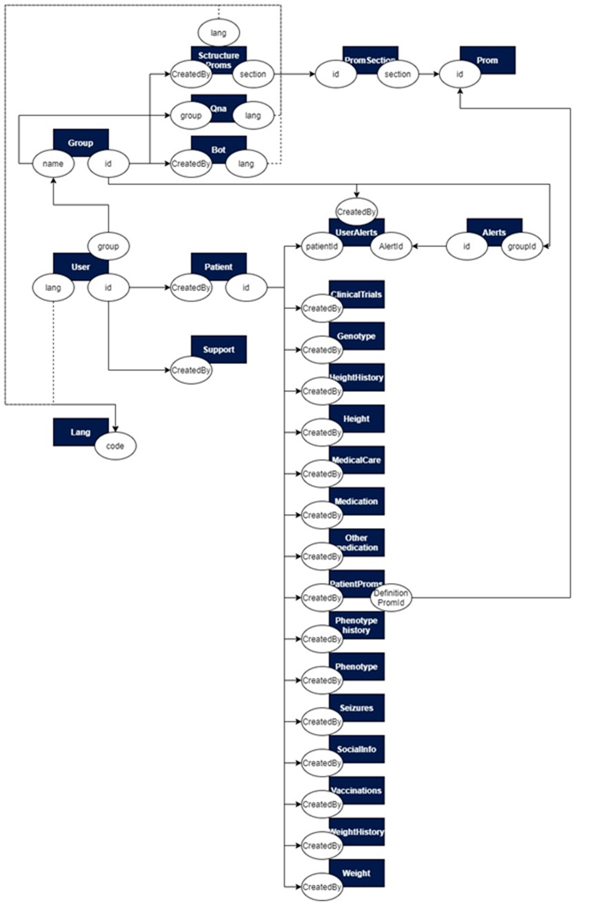

2.4. Level 4: Code¶
2.4.1. Webapp¶
All documentation for the Health29 application code is contained in:
For the development environment
For the test environment
For the production environment
For Android and iOS apps, we use the cordova framework. When compiling the Angular project, it generates the dist folder, which is the one to be added to the www folder of the Corova project. We were evaluating ionic, nativescript and reactscript, they would be good options if we were more people, but at the moment we fit more cordova.
Our idea is to migrate to FHIR, so we would have to modify our API to make calls to FHIR’s API
Health29 provides a web API to access the data. Anyone can develop an application to access and modify the data of a Health29 user. OAuth 2.0 is used as an authorization protocol to give an API client limited access to the user’s data.
2.4.1.1. Azure App service¶
A WebApp App Service has been created in Azure. The steps to follow would be:
Login to Azure’s portal
Select App services and click on add.
Select Webapp and configure: Application Name, Subscription Type, Resource Group, OS Type, Publish Type, App Service Plan/Location and Application Insights
Then, it has been taken into account that several environments have been created to work on the platform, that is, there will be different slots and the deployment of the code will be done in the corresponding one. All this has been explained in section 1 of this document.
2.4.1.2. Modules communication¶
For establish the communication:
The client will make requests of the type:
this.http.get(environment.api+'/api/'+<url>)
.map( (res : any) => {
// do something when res OK
}, (err) => {
// do something when error
})
The server will listen to these requests and will perform the appropriate operations to give an answer to the client.
api.get(<url>, auth, function)
This communication between components is done in a secure way, that is, several tools or techniques have been implemented so that the information is encrypted and the communication is reliable. For this purpose, crypto libraries (aes-256-ecb) are used for data encryption and decryption, and jwt-simple for encoding the authentication token for API calls.
Encryption: When a user tries to create an account, the pw is sha512 before it is sent to the server. On the server a jump is created using the bcrypt library and a hash is applied to it before it is stored. This password will never be returned as described in the database model (password: { type: String, select: false,…). On the other hand, in the login process, it is the data model itself that checks that the pw is valid (bcrypt.compare). If it exceeds a maximum of 5 attempts, the account is blocked for 2 hours.
Authentication token. All Methods APIs that have the authorization field in the header use Bearer authentication to restrict access to protected resources, , and always be sent next to a token. The bearer token is a cryptic string, generated by the server in response to a login request. Example of the header: Authorization: Bearer (token).
These requests can return some errors, such as the token is invalid, or has expired: { status: 401, message: “Token expired”} or { status: 401, message: “Invalid Token”}
Health29 provides a Web API for accessing data. Anyone can develop an application to access and modify a Health29 user’s data. OAuth 2.0 (Implicit Grant) is used as an authorization protocol to give an API client limited access to user data.
2.4.1.3. Code Structure: Client Structure¶
NOTE: A template was purchased to have a base: Template Link.
The structure is as follows:
The src folder has the following:
The app folder is the one with all the code.
app/app.component.{ts,html,css,spec.ts}: Defines the AppComponent along with an HTML template, CSS stylesheet, and a unit test. It is the root component of what will become a tree of nested components as the application evolves. In this file it is controlling the events of inactivity of a session, loading the language of the app depending on the language of the browser, the title that appears in the browser tab with the change of pages. If it is a mobile app, it also controls the backbutton, pause and resume events.
app/app.module.ts: Defines AppModule, the root module that tells Angular how to assemble the application.
The assets folder: It contains all the information that will be accessible from any url. Css files, js, images, language files, jsons listing countries, types of subscriptions, frequently asked questions for each group of patients, etc. It will be the only visible folder when a build is made for production.
The environments folder. This folder contains one file for each of your destination environments, each exporting simple configuration variables to use in your application. The files are replaced on-the-fly when you build your app. You might use a different API endpoint for development than you do for production or maybe different analytics tokens. You might even use some mock services. Either way, the CLI has you covered. At the moment url of the api, and fitbit credentials
Some files:
favicon.ico: Every site wants to look good on the bookmark bar. Get started with your very own Angular icon
index.html: The main HTML page that is served when someone visits your site. Most of the time you’ll never need to edit it. The CLI automatically adds all js and css files when building your app so you never need to add any script or link tags here manually. For the mobile version, two small changes must be made in this file: Change base: base href=”./” Add cordova: “script src=”cordova.js”
main.ts: The main entry point for your app. Compiles the application with the JIT compiler and bootstraps the application’s root module (AppModule) to run in the browser. You can also use the AOT compiler without changing any code by passing in –aot to ng build or ng serve
polyfills.ts: Different browsers have different levels of support of the web standards. Polyfills help normalize those differences. You should be pretty safe with core-js and zone.js, but be sure to check out the Browser Support guide for more information.
styles.css: Your global styles go here. Most of the time you’ll want to have local styles in your components for easier maintenance, but styles that affect all of your app need to be in a central place.
test.ts: This is the main entry point for your unit tests. It has some custom configuration that might be unfamiliar, but it’s not something you’ll need to edit.
tsconfig.{app|spec}.json: TypeScript compiler configuration for the Angular app (tsconfig.app.json) and for the unit tests (tsconfig.spec.json).
The app folder is the one with all the code:

Layouts: the different layouts that there are, at the moment two subfolders, for the logged ones (full) and for the ones that are not (content).
Pages: It has two subfolders, content-pages (corresponds to the logged out pages like login page, registration, etc) and full-pages (common pages for all logged out roles, like the user-profile page).
Role pages
admin: contains all pages for the admin role
superadmin: contains all pages for the superadmin role
clinical: contains all pages for the clinical role
user: contains all the pages for the user role. Each folder of these roles has a module file (it loads the needed modules), and a route file to manage the routes and control the authentication and authorization (auth-guard and role-guard)
The shared folder, which is the shared code:
auth: The Auth folder includes the services that will handle the platform’s authentication and authorization tasks. Thus, this folder will contain: authorization management (role-guard), authentication (auth-service and auth-guard), control of headers in the application’s http communications (http interceptor),page routing control(canDeactivate) and oauth.services for external services like fitbit.
Configs: configuration files, for example configuration for toasts, or parameters for graphs.
Customizer: This is the customizer or chatbot component of the platform. At the moment it’s only implemented for the user profile, but it’s exposed as a shared module in case you want to include this functionality in some other profile in the future.
Directives: correspond to the Angular directives
Footer: It’s the footer component of the platform.
Models: Here you can add the data models you want to use on the platform that are common to all profiles. At the moment only the FAQ template is added.
Navbar and navbar-nolog: It corresponds to the top bar. Navbar-nolog is for when you are not logged in.
Routes: route management. It has two files, one for the paths of the unlogged pages, and another for the rest.
Services: corresponds to the Angular services. Several have been developed as faq.service or lang.service
Sidebar: side menu, depending on the role, loads one menu or another.
Routes: In the root of the app folder, there is a file called app-routing.module.ts, which is the root of the routes management. Depending on the path, it loads some subroutes and others. For example, if it is unlogged, it loads the routes ./shared/routes/content-layout.routes, on the other hand, if it is logged in it loads ./shared/routes/full-layout.routes. In this second case, check that it is authenticated (canActivate: [AuthGuard]) The rest of the subroutes that come from full-layout, are controlled if they are logged and authenticated in the routing-module file of each module (each profile has a module) with canActivate: [AuthGuard, RoleGuard].
2.4.1.4. Code Structure: Server Structure¶
The dist folder contains the compilation of the client code.
In the models folder, the different templates for working with the platform’s database collections are defined.
The controllers folder contains the functionality to work with the previous collections. It is organized according to the actions that each role of the health29 platform can perform.
In the routes folder, all the routes of the api appear. It contains the file index.js that links the models with the controllers, defining the requests that will be available to the Health29 client. Those that have auth means that they need authorization to be used.
Middlewares has the file auth.js which is in charge of checking if the token is valid, so that you know if you have permission to make the request to the API call.
In views we have the views generated by the server and the templates for the emails.
Analogous to the client structure we have the services folder. Here, we have the following services: Auth.js creates and decodes token, crypt.js encrypts and decrypts data and email.js is the emailing service. There are also other services for exomizer and phenolizer functions.
Some files:
index.js: file where the app.js and config.js file is loaded It listens to requests.
Config.js: configuration file. The server url, port, connection with the data bases are passed to it through environment variables. The credentials of the mail that send email, the secret token of jwt, and the secret of crypto are not passed through environment variables.
Db_connect.js: will be in charge of creating the connection with the databases.
App.js: the crossdomain is established, and other node configurations. It manages the requests, and these can be of 3 types: >1. API routes managed by routes folder. >2. Server-generated view paths (handlebars) >3. the paths of the Angular client application (dist folder)
2.4.1.4. External libraries and dependencies¶
All the necessary dependencies or libraries that will be used in the implementation of the application can be checked in the “package.json” files of both the client and the server. The installation of all these libraries and dependencies has been done with npm, which updates the “Node modules” folder with the necessary packages to work with. Therefore, when you want to work with the projects, it is necessary to execute previously the command “npm install”.
On the one hand, among all those found in this file, we can mainly highlight that the versions are being used:
Both client and server:
v10.16.3 of node.
0.11.4 of botframework-webchat
For the client:
1.7.0 of Angular CLI and 5.2.5 of the node modules Angular libraries (Angular 5).
2.6.2 of TypeScript.
1.0.0 of ng-bootstrap
Jquery 3.2.1
For the server:
1.12.1 of nodemon
4.16.2 of express and 3.0.0 of express-handlebars
4.13.1 moongose
2.6.0 of async
On the other hand, specific NPM libraries have been installed for some functionalities:
For the client:
For the HTTP requests, the version 1.0.0-beta.2 of the library @auth0/angular-jwt is used
For graphic representations d3 has been installed. Version 5.7.1 of @types/d3 and 1.2.2 of @types/d3-shape
Fingerprint2 version 2.0.0 (https://www.npmjs.com/package/fingerprintjs2) is used to obtain the information of the device being used to access the platform.
Version 0.24.1 of angular-calendar is used to work with the date entries of the platform.
For data encryption, version 0.7.1 of js-sha512 is used and for the reverse process, version 2.2.0 of jwt-decode is used.
Version 7.12.9 of sweetalert2 is used for platform popups.
For the server
For emailing tasks: 4.4.0 nodemailer and 2.0.0 nodemailer-express-handlebars.
For communication with Azure: 0.10.6 of azure-sb
To use the Authy application as 2FA: 1.4.0 of authy and 1.1.4 of authy-client
For data encryption, version 0.7.0 of js-sha512 is used
In addition to this, Javascript scripts and JSON files have been added as libraries to optimize the programming of different functionalities for the client:
Javascript scripts:
JSON Files located in src/assets/jsons:
Some JSON files for managing the users’ location information (country, province, cities and phone codes): Countries folder, cities.json, countries.json, countries_nl.json and phone_codes.json
Some JSON files for obtain and manage the symptons: genes_to_phenotype.json, orpha-omim-orpha.json, orphaids.json and phenotypes.json.
A JSON with the languages available in Azure Cognitive Service for translation tasks: cognitive-services-languages.json
A JSON for the management of languages available on the platform: all-languages.json
A JSON for the types of subscription on the platform: subscription-types.json
2.4.2. External APIs¶
API Foundation29 has been designed to act as an intermediary between the webapp and Azure Qnamaker’s service. The functions that have been implemented to perform actions on the Azure service are analogous to those in the Azure documentation.
It can be consulted at the following link: API Foundation29. And the functionality and methodology of use is described in the qnamaker section of this document (2.4.3.2. Qna maker)
Some functions to use the monarch API from this have also been included in this API. But this is not being used at the moment in health29 and the calls to the monarch API are executed directly, without intermediaries.
Request for list of related conditions
request({
url: https://api.monarchinitiative.org/api/sim/search?is_feature_set=true&metric=phenodigm&id=HP:0001250&id=HP:0002133&limit=100&taxon=9606’,
json: true
}
To open a new link for information on a symptom
href="https://monarchinitiative.org/phenotype/'+res[j].id+'
To obtain information about a disease:
href=”https://monarchinitiative.org/disease/{{value.id}}#overview
And with this API, the configuration of the headers (auth.interceptor.ts) to establish the connection with Azure’s service are sent are like:
if(req.url.indexOf('https://api.monarchinitiative.org/api/')!==-1){
isExternalReq = true;
}
2.4.3. Azure cognitive services¶
2.4.3.1. Computer Vision¶
To create it from azure you just have to select the cognitive service in the marketplace: “ComputerVision”. The configuration has no complexity, just select the Price tier and the resource group.
It is used in the webapp client, as it has been indicated until now, establishing a REST communication:
this.subscription.add( this.http.post('https://westeurope.api.cognitive.microsoft.com/vision/v1.0/ocr?language='+this.cognitiveServicesLanguage +'&detectOrientation=true', data)
.subscribe( (res : any) => {
// Do something when result OK
}, (err) => {
// Do something when error
}));
And the configuration of the headers (auth.interceptor.ts) to use this service is:
if(req.url.indexOf('api.cognitive.microsoft.com/vision')!==-1){
isExternalReq = true;
const headers = new HttpHeaders({
'Ocp-Apim-Subscription-Key': '992ab4c1c5ff4412a052b0d170feeab8',
'Content-Type': 'application/octet-stream'
});
authReq = req.clone({ headers});//'Content-Type', 'application/json'
}
As it has been said before this is used for the symptom extraction, so the call is made in phenotypes.component.ts.
All the commands and settings for establishing this communication are described in the Microsoft documentation.
2.4.3.2. Qna maker¶
To create it from azure you just have to select the cognitive service in the marketplace: “Qna maker”. The configuration has no complexity, just:
Enter a name
Select subscription of Azure, the Price tier, the resource group adn the localization.
Enter an application name for establish the url: “app_name.azurewebsites.net”
As previously stated, in Health29 it is used to manage the FAQs in different ways and from different points of the platform. To work with the data of this azure service, an external API will be used as an intermediary: f29API, described in the previous section, so that all calls will be made to it.
First, the Qna Maker Knowledge base ID, which the webapp wants to access (according to patient group and language), is queried in the qna collection. With this ID it is possible to make requests to F29 API to obtain, modify or delete elements from the database.
However, the same format has been used as if the calls were made directly to Azure’s service, as an example:
this.http.get('https://f29api.northeurope.cloudapp.azure.com/api/knowledgebases/'+knowledgeBaseID+'/Prod/qna')
.map( (res : any) => {
// Do something when get the Knoledbase information
}, (err) => {
// Do something when error
}));
And with the configuration of the headers (auth.interceptor.ts) to use this service the same thing happens, the ones that would be necessary to establish the connection with Azure’s service are sent:
if(req.url.indexOf('https://f29api.northeurope.cloudapp.azure.com')!==-1){
isExternalReq = true;
const headers = new HttpHeaders({
'Ocp-Apim-Subscription-Key': '8d7bca89da4e42c1bf79b292207c9635'
});
authReq = req.clone({ headers});
}
All the commands and settings for establishing this communication are described in the Microsoft documentation.
2.4.3.3. Translator¶
To create it from azure you just have to select the cognitive service in the marketplace: “Translator text”. The configuration has no complexity, just select the Price tier and the resource group.
It is used in the webapp client, as it has been indicated until now, establishing a REST communication:
First case: communication without authorization required.
this.subscription.add( this.http.post('https://api.cognitive.microsofttranslator.com/translate?api-version=3.0&to='+this.authService.getLang(), jsonText)
.subscribe( (res : any) => {
// Do something when it returns the text from jsonText translated
}, (err) => {
// Do something when error
}));
Second case: communication with authorization required.
this.subscription.add( this.http.post('https://api.cognitive.microsoft.com/sts/v1.0/issueToken','')
.subscribe( (res : any) => {
// get the token for establish communication between webapp and text translator
sessionStorage.setItem('tokenMicrosoftTranslator', res);
}, (err) => {
// Do something when error
}));
this.subscription.add( this.http.get('https://api.microsofttranslator.com/V2/Http.svc/Translate?appid=Bearer' + ' ' + sessionStorage.getItem('tokenMicrosoftTranslator')+'&text='+<text>+'&to=en&Authorization=Bearer' + ' ' + sessionStorage.getItem('tokenMicrosoftTranslator'))
.subscribe( (res : any) => {
// Do something when it returns the text from <text> translated
}, (err) => {
// Do something when error
}));
And the configuration of the headers (auth.interceptor.ts) to use this service is:
if(req.url.indexOf('https://api.cognitive.microsoft.com/sts/v1.0/issueToken')!==-1){
isExternalReq = true;
authReq = req.clone({ headers: req.headers.set('Ocp-Apim-Subscription-Key', '7174b790ef59409280f77dd94c34a9d2' ), responseType: 'text'});
}
if(req.url.indexOf('https://api.microsofttranslator.com')!==-1){
isExternalReq = true;
authReq = req.clone({ responseType: 'text' });
}
if(req.url.indexOf('https://api.cognitive.microsofttranslator.com')!==-1){
isExternalReq = true;
authReq = req.clone({ headers: req.headers.set('Ocp-Apim-Subscription-Key', '7174b790ef59409280f77dd94c34a9d2' ) });
}
The first of these is used to translate the datapoints and to add a new language to the platform, while the second is used in the symptom section (phenotype) to translate into English the text obtained from the vision service.
All the commands and settings for establishing this communication are described in the Microsoft documentation.
2.4.4. Azure Healthbot¶
To create it from azure you just have to select the Healthcare Bot in the marketplace. To create and configure it, just follow the steps in the Microsoft guide.
In the case of Health29, the App service server has been configured to be able to deploy the three bots depending on the webapp client that is running it. So that:
var WEBCHAT_SECRET = process.env.WEBCHAT_SECRET;
var APP_SECRET = process.env.APP_SECRET;
if(req.headers.origin == 'https://health29.org'){
}else if(req.headers.origin == 'https://health29-test.azurewebsites.net'){
WEBCHAT_SECRET = process.env.WEBCHAT_SECRET_TEST;
APP_SECRET = process.env.APP_SECRET_TEST;
}else if(req.headers.origin == 'http://localhost:4200' || req.headers.origin =='https://health29-dev.azurewebsites.net'){
WEBCHAT_SECRET = process.env.WEBCHAT_SECRET_DEV;
APP_SECRET = process.env.APP_SECRET_DEV;
}
It should be noted that this service has a monthly message limit. Depending on the rate chosen in each of the Healthbots, a greater or lesser flow of information exchange or interactions of the Health29 assistant will be allowed.
NOTE: if at any time the limit is exceeded, the bot will return error 429 (Too many request).
The incorporation of this assistant to the webapp is done from the client, in particular, from the customizer component. This way, it is added to the HTML:
<div id="botContainer" style="width:95%"></div>
And the style is added from the scss file.
As for the functionality of the bot, this is included in the “.ts” file, taking into account:

Health Bot uses Bot Framework under the hood as a messaging and routing platform to deliver messages to and from the end user.
So, the steps to follow are:
Get the token for the connection with the azure service:
var paramssend = { userName: this.user.userName, userId: this.authService.getIdUser(), token: this.authService.getToken(), groupId: this.groupId, lang: this.user.lang, knowledgeBaseID: this.knowledgeBaseID};
this.subscription.add( this.http.get('https://healthbotcontainersamplef666.azurewebsites.net:443/chatBot',{params: paramssend})
.subscribe( (res : any) => {
// Get the token OK
}, (err) => {
// Get the token Error
}));
Create a bot connection:
const jsonWebToken = token;
const tokenPayload = JSON.parse(atob(jsonWebToken.split('.')[1]));
const user = {
id: tokenPayload.userId,
name: tokenPayload.userName
};
const botConnection = new BotChat.DirectLine({
//secret: botSecret,
token: tokenPayload.connectorToken,
//domain: "",
webSocket: true
});
Start conversation
const botContainer = document.getElementById('botContainer');
$('#botContainer').empty();
botContainer.classList.add("wc-display");
BotChat.App({
botConnection: botConnection,
user: user,
locale: this.user.lang,
bot: {id: ''},//id: 'h29bot-giochop' //id: 'zebrahealthbot'
resize: 'detect'
// sendTyping: true, // defaults to false. set to true to send 'typing' activities to bot (and other users) when user is typing
}, botContainer);
A communication will be established with it to exchange information and perform the relevant actions:
this.subscription.add( botConnection.postActivity({type: "event", value: jsonWebToken, from: user, name: "InitAuthenticatedConversation"}).subscribe(function (id) {
// Start scenarios
}, (err) => {
// Do something when error
}));
All the commands and settings for using this Healthbot service ara available in Microsoft documentation.
In addition to this, the HTTP headers have to be configured to be able to use this service in the auth.interceptor.ts file:
if(req.url.indexOf('healthbot')!==-1){
console.log('epasa');
isExternalReq = true;
const headers = new HttpHeaders({
'Content-Type': 'text/html; charset=utf-8',
'Access-Control-Allow-Methods': 'GET'
});
authReq = req.clone({ headers, responseType: 'text'});//'Content-Type', 'application/json'
}
As already indicated, once the bot is embedded in the webapp you will have to indicate it to initialize the desired scenarios in each case. These scenarios are designed, implemented and configured in:
Healthbot of the development environment.
Healthbot of the test environment.
Healthbot of the production environment.
In the microsoft documentation there are guides to help you create these scenarios.
The general workflow of the Healthbot scenarios defined for Health29 is
Different scenarios could be designed for each patient group. Thus, for example, the flow of the main scenario of the Health29 assistant for the Duchenne group can be schematized as:
Except for the control scenarios that do not send messages to the user, the rest are replicated: one is created per user language available in Health29 (as can be seen in the previous diagram, the nomenclature “scenarioName_lang” has been used). In this way, the scenarios that will be executed depend on the language selected by the user on the Health29 platform.
A modification of this was started to use the Healthbot localization service to avoid scenario replications. However, there is still work to be done since this translation could not be managed for some messages sent by the bot to notify of problems or errors. This has been solved so far from the Health29 client code. For example:
if((activity.text ==="I didn't understand. Please choose an option from the list.")){
var x = document.getElementsByClassName("format-markdown");
for (var element=0;element<x.length;element++){
var stringElement=x[element].firstElementChild.childNodes[0].textContent;
if((stringElement =="I didn’t understand. Please choose an option from the list.")||
(stringElement=="No se pudo reconocer su respuesta. Por favor seleccione una opción de la lista.")){
var tempElement=x[element].firstElementChild.childNodes[0];
tempElement.textContent = this.translate.instant("generics.Understand");
$(x[element].firstElementChild.childNodes[0]).replaceWith(tempElement.textContent);
}
}
In this case, the messages shown by the bot are read and translated using the translation system used in Health29 that is explained in the “Multilanguage” section of this document.
Finally, it should also be noted that an action flow has been defined for the task of closing or minimizing the platform’s assistant, taking into account that
This will be displayed whenever a user logs in.
The user will be given the option to end the conversation, so previous messages will be deleted and the wizard will be minimized.
The behavior of the buttons to maximize/minimize and open/close the assistant in Health29 is maintained.
2.4.5. Azure blobs¶
To create it from azure you just have to search in the marketplace: “Storage account”. The configuration has no complexity,
Fill project details: subscription and resource group
Fill instance details:
Storage account name
Localization
Performance (default standard)
Account kind (blobstorage)
Replication
Access tier (hot)
It is used in the webapp client establishing a REST communication. In this project, the Javascript library Azure storage is used. In this way, some services have been created in the client project of Angular that will allow working with the reading and writing functions of the Azure blob. Thus, the following services have been defined:
blob-storage-medical-care.service.ts
blob-storage-support.service.ts
blob-storage.service.ts
In all cases, an interface to work with blobs like this will be exported:
export interface IBlobAccessToken {
blobAccountUrl: string;
sasToken: string;
containerName: string;
patientId: string; (optional)
}
and a class will be defined with the possible functions that can be performed with the blob:
@Injectable()
export class BlobStorage<name>{...}
With this, from the different sections of Health29 it will be possible to create the containers in the blob and store the relevant information. An example of use would be:
constructor ... (...,private blob: BlobStorageMedicalCareService,...)
...
this.blob.uploadToBlobStorage(this.accessToken, <files>, filename, index1, index2);
In addition to this, the HTTP headers have to be configured to be able to use this service in the auth.interceptor.ts file:
if(req.url.indexOf('https://blobgenomics.blob.core.windows.net/')!==-1){
isExternalReq = true;
const headers = new HttpHeaders({
'Access-Control-Allow-Origin':'*',
'Ocp-Apim-Subscription-Key': 'lXaW8+GnmQuHYVku3GWEjZnRhi9hv5u7v2kGvRiUQR6/PTlJuIZT+hyf+nUgLGTSpIToheyZ7oXyX34+q3s63g=='
});
authReq = req.clone({ headers});//'Content-Type', 'application/json'
}
if(req.url.indexOf('https://health29support.blob.core.windows.net/')!==-1){
isExternalReq = true;
const headers = new HttpHeaders({
'Access-Control-Allow-Origin':'*',
'Ocp-Apim-Subscription-Key': 'g/KX0iFgXuPQMHDDLWYDXJDihvPTMv9/Uyp2lsWGu81azji7i0oPh21R3vjnn1oDGIHjsYsRIEEuR5F8PFrbAw=='
});
authReq = req.clone({ headers});//'Content-Type', 'application/json'
}
2.4.6. Other services¶
The DiagnosisApi is an App Service of Azure that is used for consulting the symptons of a diagnose. To create it from azure you must create an App service of Azure.
It is used in the webapp client establishing a REST communication:
let httpParams = new HttpParams();
hposStrins.forEach(id => {
httpParams = httpParams.append('symtomCodes', id);
});
[...]
this.subscription.add( this.http.get('https://diagnosisapi.azurewebsites.net/api/Consulting/GetSymptomsFromCodes',{params: httpParams})
.subscribe( (res : any) => {
// Get the symptoms codes OK
}, (err) => {
// Do something when error
}));
And the configuration of the headers (auth.interceptor.ts) to use this service is:
if(req.url.indexOf('https://diagnosisapi.azurewebsites.net/api/Consulting')!==-1){
isExternalReq = true;
const headers = new HttpHeaders({
'Access-Control-Allow-Origin':'*'
});
authReq = req.clone({ headers});//'Content-Type', 'application/json'
}
In the same way, we can access and use the Genomics Functions apps. It is used in the webapp client establishing a REST communication:
this.subscription.add( this.http.post('https://genomicservices.azurewebsites.net/api/exomize?code=p/aGykMRV8KiTfo8AXO8yDjHYdImgRjjasrGu8eaBVn7U75jf1DtmQ==',jsonfile)
.subscribe( (res : any) => {
.subscribe( (res : any) => {
// Result of exomize function OK
}, (err) => {
// Do something when error
}));
And the configuration of the headers (auth.interceptor.ts) to use this functions is:
if(req.url.indexOf('https://genomicservices.azurewebsites.net/api/exomize')!==-1){
isExternalReq = true;
const headers = new HttpHeaders({
'Access-Control-Allow-Origin':'*'
});
authReq = req.clone({ headers});//'Content-Type', 'application/json'
}
2.4.7. Databases¶
The databases are created in Azure as Azure Cosmos DB account.To create it you just have to select in the marketplace: “Azure Cosmo db” and configure it.
As mentioned throughout the development of this document, there will be 4 databases: two for the test and development environments, and two for the production environment. The structure of the databases of the two environments will be the same, so we have:

Each database will be composed of some collections that will be accessed from the Health29 platform server.
In the following sections we will explain how this connection between Health29 and Azure’s databases is made, and we will go deeper into each of them by explaining the structure and layout of the collections they contain in each case.
2.4.7.1. Databases and health29 communication¶
As indicated above, the communication is established using mongoose, so for each model or scheme in a database collection, we will have
const mongoose = require ('mongoose');
const { conndbaccounts } = require('../db_connect')
[...] {Schema definition}
module.exports = conndbaccounts.model(<Collection name>,<schema name>)
2.4.7.2. DDBB: Accounts¶
Alerts In this collection are saved the notifications or alerts created by the administrator or super administrator profiles, indicating the group of users (receivers) to which they will be sent/displayed. It also includes fields to manage the language of the notification.
const AlertsSchema = Schema({
groupId: {type:String, default:"None"},
type: {type:String, default:""},
identifier: {type:String, default:""},
translatedName: {type: Object, default: []},
launchDate: {type: Date, default: Date.now},
endDate: {type: Date},
url: {type:Object, default:[]},
role: { type: String, enum: ['SuperAdmin', 'Admin', 'User', 'Clinical', 'Lab'], default: 'User'},
color: {type:String, default:""},
logo: {type:String, default:""},
importance: {type:String, default:""},
receiver: {type:Object, default:[]},
createdBy: { type: Schema.Types.ObjectId, ref: "Group"}
})
Bot This collection stores the information exchanged between the bot and a user when using the Healthbot direct question scenario.
const BotSchema = Schema({
lang: {type:String, default:""},
data: {type: Object, default: []},
date: {type: Date, default: Date.now},
curatedBy: {type:String, default:""},
type: String,
createdBy: { type: Schema.Types.ObjectId, ref: "Group"}
})
Group In this collection, the patient groups available at Health29 are stored.
const GroupSchema = Schema({
name: {
type: String
},
subscription: String,
email: String,
defaultLang: {type: String, default: 'en'},
phenotype: {type: Object, default: []},
medications: {type: Object, default: []}
})
Lab Same as the last one but with the labs.
const LabSchema = Schema({
name: {
type: String,
index: true,
unique: true
}
})
Lang There will be one entry in this collection for each language you want to use on the Health29 platform
const LangSchema = Schema({
name: { type: String, unique: true, required: true },
code: { type: String, index: true, unique: true, required: true }
},
{ versionKey: false // You should be aware of the outcome after set to false
})
Patient In this collection the data of the patients registered in the platform are stored.
const SiblingSchema = Schema({
gender: String,
affected: String //affected: { type: String, enum: ['yes', 'no']} si hacemos validacion de que no pueda ser null, igual poner el enum
})
const ParentSchema = Schema({
highEducation: String,
profession: String,
relationship: String,
nameCaregiver: String
})
const PatientSchema = Schema({
patientName: String,
surname: String,
birthDate: Date,
citybirth: String,
provincebirth: String,
countrybirth: String,
street: String,
postalCode: String,
city: String,
province: String,
country: String,
phone1: String,
phone2: String,
gender: String,
siblings: [SiblingSchema],
parents: [ParentSchema],
createdBy: { type: Schema.Types.ObjectId, ref: "User"},
death: Date,
notes: {type: String, default: ''},
answers: {type: Object, default: []},
subscriptionToGroupAlerts:{type:Boolean,default:true}
})
Prom The datapoints associated with a group of patients are stored here.
const PromSchema = Schema({
name: String,
responseType: String,
question: String,
hideQuestion: {type: Boolean, default: false},
marginTop: {type: Boolean, default: false},
values: Array,
section: { type: Schema.Types.ObjectId, ref: "PromSection"},
order:Number,
periodicity: Number,
isRequired: {type: Boolean, default: false},
enabled: {type: Boolean, default: false},
createdBy: { type: Schema.Types.ObjectId, ref: "Group"},
width: String,
hpo: String,
relatedTo: { type: Schema.Types.ObjectId, ref: "PromSchema"},
disableDataPoints: { type: Schema.Types.ObjectId, ref: "PromSchema"}
})
PromSection Each of the above datapoints is encapsulated within a section. The different sections or groupings of datapoints that can appear on the platform for each group of patients are saved in this collection.
const PromSectionSchema = Schema({
name: String,
description: String,
enabled: {type: Boolean, default: true},
order: {type: Number, default: 0},
createdBy: { type: Schema.Types.ObjectId, ref: "Group"}
})
Qna To access the information contained in qnaMaker, it is necessary to identify each of the databases created there, according to language and patient group. This collection contains this identifying information.
const QnaSchema = Schema({
group: { type: String, required: true},
knowledgeBaseID: { type: String, required: true},
lang: { type: String, required: true},
categories:{type:Object,default:[]}
})
StructureProms Again this collection provides functionality to work with the different datapoints of a group of patients. It stores the structure of the datapoints for each patient group for each available language. Highlight here the data field: it contains a lot of information, for example for the duchenne patient group it is 2,000 lines of a JSON. It has been done this way because we have a section to translate, and so we load everything in the language of the patient
const StructurePromSchema = Schema({
data: Schema.Types.Mixed,
lang: { type: String, required: true},
createdBy: { type: Schema.Types.ObjectId, ref: "Group"}
})
Support In this collection is stored the information related to the requests made by users to the support of the platform.
const SupportSchema = Schema({
platform: String,
subject: String,
description: String,
type: String,
status: {type: String, default: 'unread'},
statusDate: {type: Date, default: Date.now},
files: Object,
date: {type: Date, default: Date.now},
createdBy: { type: Schema.Types.ObjectId, ref: "User"}
})
UserAlerts This collection is related to the “Alerts” collection. The content of this one will be generated from the previous one, according to the receiver and the launch date of the alert. The information about the notifications and their status for each patient in the platform will be stored here.
const UseralertsSchema = Schema({
alertId: {type:String, default:""},
patientId: {type:String, default:""},
state: {type:String, default:"Not read"},
snooze: {type:String, default:"1"},
showDate: {type: Date},
launch: {type: Boolean, default: false},
createdBy: { type: Schema.Types.ObjectId, ref: "Group"}
})
User Analogous to patient collection but with user data.
const SiblingSchema = Schema({
gender: String,
affected: { type: String, enum: ['yes', 'no']}
})
const ParentSchema = Schema({
highEducation: String,
profession: String
})
const UserSchema = Schema({
email: {
type: String,
index: true,
trim: true,
lowercase: true,
unique: true,
required: 'Email address is required',
match: [/^\w+([\.-]?\w+)*@\w+([\.-]?\w+)*(\.\w{2,3})+$/, 'Please fill a valid email address']
},
password: { type: String, select: false, required: true, minlength: [8,'Password too short']},
role: { type: String, required: true, enum: ['SuperAdmin', 'Admin', 'User', 'Clinical', 'Lab'], default: 'User'},
group: { type: String, required: true, default: 'None'},
confirmed: {type: Boolean, default: false},
confirmationCode: String,
signupDate: {type: Date, default: Date.now},
lastLogin: {type: Date, default: null},
userName: String,
loginAttempts: { type: Number, required: true, default: 0 },
lockUntil: { type: Number },
lang: { type: String, required: true, default: 'en'},
randomCodeRecoverPass: String,
dateTimeRecoverPass: Date,
massunit: { type: String, required: true, default: 'kg'},
lengthunit: { type: String, required: true, default: 'cm'},
blockedaccount: {type: Boolean, default: false},
permissions: {type: Object, default: {}},
modules: {type: Object, default: []},
platform: {type: String, default: ''},
authyId:{type:String,default:null},
authyDeviceId:{type:Object,default:[]},
phone: String,
})
2.4.7.3. DDBB: Data¶
In all the collections of this database, the information entered by the patient in the Health29 platform will be saved. Thus, for each of the sections that appear in it, the information relating to it will be saved in the corresponding collection of this database.
ClinicalTrials
const ClinicalTrialSchema = Schema({
nameClinicalTrial: String,
takingClinicalTrial: String,
drugName: String,
center: String,
date: Date,
createdBy: { type: Schema.Types.ObjectId, ref: "Patient"}
})
Diagnosis
const DiagnosisSchema = Schema({
hasDiagnosis: {type: Boolean, default: false},
previousDiagnosis: {type: String, default: null},
identifiedGene: {type: String, default: null},
evaluation: String,
notes: {type: String, default: ''},
infoGenesAndConditionsExomizer: {type: Object, default: []},
infoGenesAndConditionsPhenolyzer: {type: Object, default: []},
relatedConditions: {type: Object, default: []},
hasVcf: {type: Boolean, default: false},
createdBy: { type: Schema.Types.ObjectId, ref: "Patient"}
})
Genotype
const GenotypeSchema = Schema({
inputType: {type: String, default: null},
date: {type: Date, default: Date.now},
data: Object,
createdBy: { type: Schema.Types.ObjectId, ref: "Patient"}
})
HeightHistory
const HeightHistorySchema = Schema({
dateTime: {type: Date, default: Date.now},
value: String,
technique: String,
createdBy: { type: Schema.Types.ObjectId, ref: "Patient"}
}, {
versionKey: false // You should be aware of the outcome after set to false
})
Height
const HeightSchema = Schema({
dateTime: {type: Date, default: Date.now},
value: String,
technique: String,
createdBy: { type: Schema.Types.ObjectId, ref: "Patient"}
}, {
versionKey: false // You should be aware of the outcome after set to false
})
Medicalcare
const MedicalCareSchema = Schema({
date: Date,
data: Object,
createdBy: { type: Schema.Types.ObjectId, ref: "Patient"}
})
Medication
const MedicationSchema = Schema({
drug: Object,
dose: String,
startDate: {type: Date, default: Date.now},
endDate: {type: Date, default: null},
sideEffects: {type: Object, default: null},
adverseEffects: Object,
compassionateUse: {type: String, default: ''},
vaccinations: String,
vaccinationDate: {type: Date, default: Date.now},
notes: {type: String, default: ''},
freesideEffects: {type: String, default: ''},
createdBy: { type: Schema.Types.ObjectId, ref: "Patient"}
})
Othermedications
const OtherMedicationSchema = Schema({
name: String,
dose: String,
startDate: {type: Date, default: Date.now},
endDate: {type: Date, default: null},
type: String,
notes: String,
createdBy: { type: Schema.Types.ObjectId, ref: "Patient"}
})
Patient-proms
const PatientPromSchema = Schema({
data: Schema.Types.Mixed,
date: {type: Date, default: Date.now},
definitionPromId: { type: Schema.Types.ObjectId, ref: "PromSchema"},
createdBy: { type: Schema.Types.ObjectId, ref: "Patient"}
})
PhenotypeHistory
const PhenotypeHistorySchema = Schema({
validator_id: {type: String, default: null},
validated: {type: Boolean, default: false},
inputType: {type: String, default: null},
date: {type: Date, default: Date.now},
data: Object,
createdBy: { type: Schema.Types.ObjectId, ref: "Patient"}
})
Phenotype
const PhenotypeSchema = Schema({
validator_id: {type: String, default: null},
validated: {type: Boolean, default: false},
inputType: {type: String, default: null},
date: {type: Date, default: Date.now},
data: Object,
createdBy: { type: Schema.Types.ObjectId, ref: "Patient"}
})
Seizures
const SeizuresSchema = Schema({
disparadores: {type: Object, default: []},
disparadorEnfermo: {type: String, default: ''},
disparadorOtro: {type: String, default: ''},
disparadorNotas: {type: String, default: ''},
descripcion: {type: Object, default: []},
descripcionRigidez: {type: String, default: ''},
descripcionContraccion: {type: String, default: ''},
descripcionOtro: {type: String, default: ''},
descipcionNotas: {type: String, default: ''},
postCrisis: {type: Object, default: []},
postCrisisOtro: {type: String, default: ''},
postCrisisNotas: {type: String, default: ''},
estadoAnimo: {type: String, default: ''},
estadoConsciencia: {type: String, default: ''},
duracion: {type: Object, default: {hours: 0, minutes: 0, seconds:0}},
type: {type: String, default: null},
start: {type: Date, default: null},
end: {type: Date, default: null},
GUID: {type: String, default: ''},
title: {type: String, default: ''},
color: {type: Object, default: {}},
actions: {type: Object, default: []},
createdBy: { type: Schema.Types.ObjectId, ref: "Patient"}
})
Social info
const SocialInfoSchema = Schema({
education: String,
completedEducation: String,
currentEducation: String,
work: String,
hoursWork: String,
profession: String,
livingSituation: Array,
support: Array,
sports: Array,
interests: Array,
moreInterests: String,
createdBy: { type: Schema.Types.ObjectId, ref: "Patient"}
})
Vaccinations
const VaccinationSchema = Schema({
name: String,
date: Date,
createdBy: { type: Schema.Types.ObjectId, ref: "Patient"}
})
WeightHistory
const WeightHistorySchema = Schema({
dateTime: {type: Date, default: Date.now},
value: String,
createdBy: { type: Schema.Types.ObjectId, ref: "Patient"}
}, {
versionKey: false // You should be aware of the outcome after set to false
})
Weight
const WeightSchema = Schema({
dateTime: {type: Date, default: Date.now},
value: String,
createdBy: { type: Schema.Types.ObjectId, ref: "Patient"}
}, {
versionKey: false // You should be aware of the outcome after set to false
})
2.4.7.4. Collections relationship¶
The following diagram shows a summary of the relationships between the different database collections for each environment:

2.4.8. Multilanguage¶
The Health29 platform has the option of being displayed in several languages for the user. In particular, it is implemented for English, Spanish and Dutch.
To achieve this different implementations will be made in the client and the server of the webapp.
2.4.8.1. Multilanguage in client¶
On the one hand, the client uses the ngx-translate library. For that, version 9.0.2 of the core has been installed in the project:
npm install @ngx-translate/core@^9.0.2 --save
And, in addition, version 2.0.1 of the http-loader is used:
npm install @ngx-translate/http-loader --save
To use it, you should configure app.module.ts:
import { TranslateModule, TranslateLoader } from '@ngx-translate/core';
import { TranslateHttpLoader } from '@ngx-translate/http-loader';
export function createTranslateLoader(http: HttpClient) {
return new TranslateHttpLoader(http, environment.api+'/assets/i18n/', '.json');
}
@NgModule({
[...]
imports: [
...
TranslateModule.forRoot({
loader: {
provide: TranslateLoader,
useFactory: (createTranslateLoader),
deps: [HttpClient]
}
}),
...
]
[...]
})
Furthermore, it is included in shared.module.ts:
import { TranslateModule } from '@ngx-translate/core';
[...]
@NgModule({
exports: [
...
TranslateModule,
...
],
imports: [
...
TranslateModule
],
[...]
})
[...]
And it will also be included in the module file of each component that is going to use this service in the same way, and in the .ts file of the component the translation service will be included:
[...]
import { TranslateService } from '@ngx-translate/core';
[...]
constructor(...,public translate: TranslateService,...){...}
this.translate.instant("JSON_key1.JSON_key2")
Finally, the service lang.service.ts has been created to implement the load function of the different languages available in the platform: “loadDataJson(lang:string)”
this.http.get(environment.api+'/assets/i18n/'+lang+'.json')
This function will be in charge of obtaining the information of the different JSON files for each language, located in scr/assets/i18n:
This function will be called when the user changes the language of the platform.
On the other hand, it has already been commented throughout this document that an Azure translation service is used for certain functions: the cognitive service Translator text. This has been explained in section 2.4.3.3. of this document at code level and in section 2.3.3.3. at component level.
2.4.8.2. Multilanguage in server¶
On the server, on the one hand you use google-translate-api. It will be used in the superadmin language controller (controllers/superadmin/langs.js) to manage new languages.
On the other hand, different views have been implemented (one for each language in which we want to use the health29 platform) which will be selected according to the language information provided by the customer in their requests.
2.4.9. Second factor autenthication¶
The 2FA was incorporated in Health29 for the login on the platform of certain groups of patients.
Initially, an analysis was made of the different options that could be used for implementation, concluding in Authy. Authy has the best combination of compatibility, usability, security and reliability. platforms including iOS, Android, Windows, Mac and Chrome, and has PIN and biometric protection for the application. Authy includes a secure cloud backup option, which makes it easy to use on multiple devices and makes your tokens easy to restore if you lose or replace your phone.
If you lose your phone, you lose access to your authentication application. To solve this problem, most authentication applications offer cloud-based backups (although security experts tend to recommend against using this feature), and some authentication application manufacturers are better at explaining how (or if) they encrypt these backups. Authy is the only application we tested that offers two security features that assist in account recovery: an encrypted cloud backup and support for a secondary device.
You can also install Authy on a secondary device, such as a computer or tablet, and use that device along with backups to recover your account in case you lose your phone. Authy calls this feature “multi-device”. Once you add the second device, Authy recommends that you disable the feature so that another person cannot add another device to take control of your account (Authy will continue to work on both devices). With backups and multi-device enabled, your tokens are synchronized across all devices where Authy is installed.
You can block the Authy application behind a PIN or biometric identification, such as a fingerprint or facial scan. If your phone is already blocked in this way (and it should be), this additional step is not necessary, but it’s a good touch if you want to use a different PIN for added security.
In particular, the Authy service we are using is accessed from the Twilio console. The project was created: 2FA Project and the application Health29-Duchenne. From this portal it is possible to configure the screen to be shown to the users, the options to be worked with, and also to manage the current users.
For the implementation the version 1.4.0 of authy has been used and is added to the code:
const authy = require('authy')(APIKEY);
As mentioned above, the user’s model and controller have been modified:
In the user model, the fields were added:
authyId:{type:String,default:null},
authyDeviceId:{type:Object,default:[]},
phone: String,
To store the information on each user required for interaction with Authy.
In the user’s controller, the registration and user login functions were updated, and a new one was created to update those that existed before the addition of the functionality. In all the functions the group of patients to which the user belongs is checked in order to apply or not the authentication conditions. For these tasks the Authy functions will be used: register_user, send_approval_request and check_approval_status.